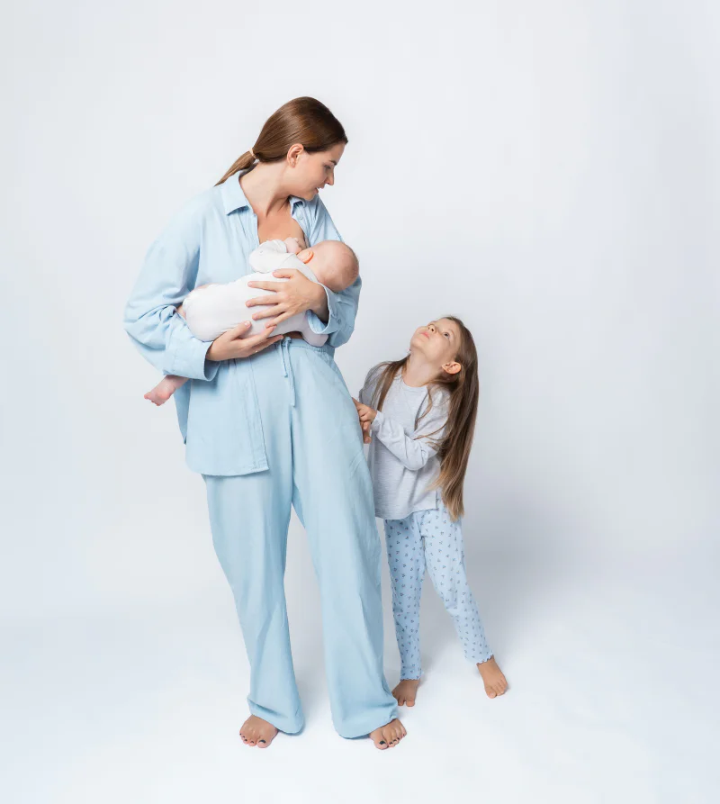

Коли дитина не злазить з рук
Відео-порадник для батьків
«Як не пропустити радість батьківства»
Безкоштовно

Поради, лайфхаки і просто підтримка для батьків, які 24/7 з дитиною на руках. Підпишись і отримай безкоштовно.
ОтриматиВідео-порадник для батьків
«Як не пропустити радість батьківства»
Безкоштовно

Поради, лайфхаки і просто підтримка для батьків, які 24/7 з дитиною на руках. Підпишись і отримай безкоштовно.
Отримати